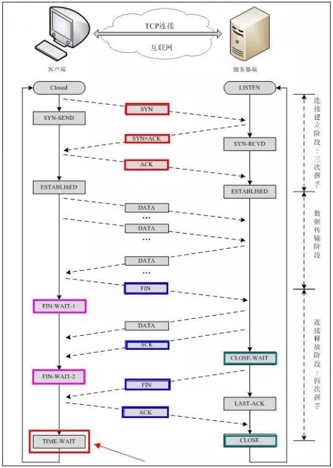

本文转载自：面试-长链接与短链接
前言
长链接和短链接又分别称为持续链接和非持续链接
Web页面上通常有很多对象。有些对象较小，比如HTML文本或图标；有些对象却很大，如视频文件。对于众多小的文件，如果它们的所有请求以及响应都经过相同的TCP连接来发送，其工作效率就会提高。这种将多个请求/响应对经同一个TCP链接进行传送的方式被称为持续连接。此时，又可以分为两种情况：无流水线的持续链接和有流水线的持续链接。对于前者，仅当前面的响应已经收到时，客户机才会发出新的请求，这使每个引用对象都会引入一个RTT时延。对于后者，只要客户机遇到一个引用对象，他就发送请求，对于所有的引用的对象，只引入一个RTT时延。这种流水线的持续连接是HTTP/1.1的默认状况。
而对于很大的对象，如果每个请求/响应都单独经过一条TCP连接发送，用户的感受将会更好。这种将每个请求/响应都经过一个单独的TCP连接进行发送的方式被称为非持续连接。尽管HTTP客户机和服务器在其默认方式下均使用持续连接方式，但也能将他们的配置成使用非持续连接方式。
表层-HTTP
长链接与锻炼的区别是头域：Connection。
在http1.0及之前都是默认方式为非持久性链接（关键词未知查不到抱歉！）。在HTTP1.1之后就将链接默认为Keep-Alive表示是持久性链接。当链接想要关闭的话就将状态字设置为close。
题外话，这个头域还有一个作用是可以控制不再转发给代理。
他的根源是控制tcp的链接状态。
一个详细的HTTP请求：
1 | 浏览器与服务器之间使用持续链接方式，将出现下列情况： |
在上述例子中，如果使用了非持续性连接方式，那么每个TCP连接在服务器发送一个对象后关闭，即该连接并不为其他的对象持续下来。这样一共产生了14个TCP连接。
持久化的链接的好处在于减少了tcp链接的重复建立和断开所造成的额外开销，减轻了服务器的负载。另外，减少开销的那部分时间，使http请求和响应能够更早的结束，这样web的显示速度也就相应的提高了。
采用持久化的原因是现在的页面越来越大！html中的内容需要发送多次resquest来进行接收，每次都断开tcp链接都会产生明显的开销。
持久化链接固然好，但是我们要知道一个系统的链接数目是有限的。我们可以通过ulimit -n可以查看最大链接数。
本质-TCP
短连接
我们模拟一下TCP短连接的情况，client向server发起连接请求，server接到请求，然后双方建立连接。client向server 发送消息，server回应client，然后一次读写就完成了，这时候双方任何一个都可以发起close操作，不过一般都是client先发起 close操作。为什么呢，一般的server不会回复完client后立即关闭连接的，当然不排除有特殊的情况。从上面的描述看，短连接一般只会在 client/server间传递一次读写操作。
短连接的优点是：管理起来比较简单，存在的连接都是有用的连接，不需要额外的控制手段
长连接
接下来我们再模拟一下长连接的情况，client向server发起连接，server接受client连接，双方建立连接。Client与server完成一次读写之后，它们之间的连接并不会主动关闭，后续的读写操作会继续使用这个连接。
先说一下TCP/IP详解上讲到的TCP保活功能，保活功能主要为服务器应用提供，服务器应用希望知道客户主机是否崩溃，从而可以代表客户使用资源。如果客户已经消失，使得服务器上保留一个半开放的连接，而服务器又在等待来自客户端的数据，则服务器将应远等待客户端的数据，保活功能就是试图在服务器端检测到这种半开放的连接。
如果一个给定的连接在两小时内没有任何的动作，则服务器就向客户发一个探测报文段，客户主机必须处于以下4个状态之一：
1.客户主机依然正常运行，并从服务器可达。客户的TCP响应正常，而服务器也知道对方是正常的，服务器在两小时后将保活定时器复位。
2.客户主机已经崩溃，并且关闭或者正在重新启动。在任何一种情况下，客户的TCP都没有响应。服务端将不能收到对探测的响应，并在75秒后超时。服务器总共发送10个这样的探测 ，每个间隔75秒。如果服务器没有收到一个响应，它就认为客户主机已经关闭并终止连接。
3.客户主机崩溃并已经重新启动。服务器将收到一个对其保活探测的响应，这个响应是一个复位，使得服务器终止这个连接。
4.客户机正常运行，但是服务器不可达，这种情况与2类似，TCP能发现的就是没有收到探查的响应。
链接的实现就是通过socket来进行通讯的

长连接短连接操作过程
短连接的操作步骤是：
建立连接——数据传输——关闭连接…建立连接——数据传输——关闭连接
长连接的操作步骤是：
建立连接——数据传输…（保持连接）…数据传输——关闭连接